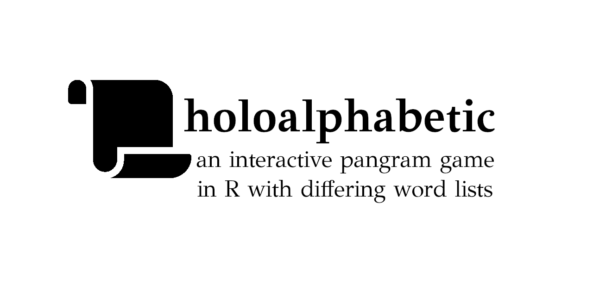

This is a series of R functions written to create “pangram” wordgames. A pangram or holoalphabetic sentence is one which uses every letter of the alphabet, e.g., “Sphinx of black quartz, judge my vow.” (Or, more famously, “The quick brown fox jumps over the lazy dog.”) In the context of this game, however, the word game is limited to 6-10 letters (defaulting to 7). For example, the letters l, a, h, t, o, m, and b can form 46 words of at least four letters, of which the only pangram (using all seven letters) is “mothball”.
The game requires you to use one letter in every word - for example, m might be required, meaning that “moth” would be an acceptable word, but “loath” would not be.
The R functions have been written to create an interactive game, meaning that you can guess words and receive points for each word.
The game is inspired by the New York Times’ “Spelling Bee,” and uses word lists from the Spell Checking Oriented Word Lists (SCOWL) by Kevin Atkinson. Because of the multiple lists, this game adds the following functionality (besides the fact that you can play as many games as you like!):
num_letters)dictionary = "slim") or a broader, more inclusive one (dictionary = "broad")obscenities = TRUE)min_word_length
game_letters
In R, you can install directly from github:
# if needed: install.packages("devtools")
devtools::install_github("jdbest/holoalphabetic")The most direct way to play the game is just running the function play_game():
However, if you think you may want to play the game a bit at a time, you may assign the game’s data to a variable, and then reuse it:
You may always exit the game by typing an x in the Console; doing so will save your data. Note that using the ESC key will not result in your data saving.
You can also play the game with modifications; for example, you might want to play a smaller (6-letter) variant with profanity included:
game2 <- play_game(num_letters = 6, obscenities = TRUE)# If you'd like to see the rules, enter 'y' and then hit return.
# Otherwise, enter your first word or leave the line blank to reorder the letters.
# Selecting letters!...Letters: F g l z n i
? Responding with a guess grants points (1 per minimum-length word, and 1 per letter for any words over the minimum length) and a response that includes the total number of possible points.
? flinging
# 8 points!
# Correctly guessed: flinging
# Score: 8 / 72
# Letters: l z i g n FResponding with a word not in the dictionary receives a response, e.g., “No, flizzing isn’t in the word list.”; guesses without the central letter remind you to use it. Guessing the pangram receives a specific note:
? fizzling
# That's a pangram!
# 15 points!
# Correctly guessed: flinging fizzing fizzling
# Score: 30 / 72
# Letters: F z g n l iQuitting the game can be done at any time by hitting an x alone; pressing the escape key also quits but does not save progress. The game—if saved— can be resumed:
game2 <- play_game(game2)# You've resumed your game.
# Correctly guessed: flinging fizzing fizzling
# Score: 30 / 72
# Letters: F g l z n i Guessing all words results in a complete score (here, 72/72). However, you can pause the game (by entering an x), ask for all possible words (by entering [a] and confirming with a y), or reread the “rules” (by entering just a y at the prompt).
create_game()
The function create_game() is called by play_game() to make a new pangram; you may choose to create multiple games all at once, and access just the letters from the resulting object, e.g.:
set.seed(12)
letter_list <- create_game(num_letters = 8)
letter_list$game_letters# "c" "x" "o" "t" "i" "m" "a" "n"The create_game() function chooses letters at random unless you request otherwise (here, the seed should result in the same eight letters); as a result, it occasionally will take some time until it identifies letters that can form a pangram, especially if you’re using num_letters higher than 7.
find_all_words() and has_pangram()
The function find_all_words() takes a string of letters and attempts to identify words that use any combination of them. By default, all words will use the first letter as the central one; you can change this argument.
The function has_pangram() takes a vector of separated letters and simply identifies whether a pangram exists. This is particularly useful if you’re doubting yourself! It intentionally does not tell you what the pangram is, however. (Use find_all_words() for that… or find it yourself!)
find_all_words(letter_list$game_letters) # letter list from aboveThis results in a character vector of 85 words.
has_pangram(letter_list$game_letters)# TRUEYou can also manually enter the letters:
find_all_words("jutis", dictionary = broad)
has_pangram("jutis")(There are three words with a normal dictionary, but 11 with the broad dictionary, which includes alternative spellings and plurals of the pangram; you may or may not consider these to be “real English words.”")
play_game() directly takes arguments for create_game()